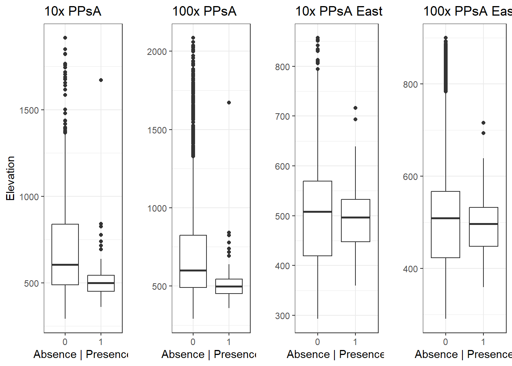

Chapter 2 Plains Spotted Skunk Distribution in South Dakota

Figure 2.1: A ‘wanted’ flyer created to solicit spotted skunk observations
I conducted a widespread campaign to solicit plains spotted skunk observations in South Dakota. I encouraged respondents to report plains spotted skunk observations via phone, email, or online through an iNaturalist project page that we created to aggregate online reports. Targeted respondents included state natural resource managers, academic institutions, furbearer license holders and state trapper association members, agricultural landowners, and members of various hunting and wildlife-oriented social groups. Information appeared in multiple news publications throughout the state, including in print, online, and over the radio. I also queried the [VertNet] (http://vertnet.org/) and [Global Biodiversity Information Facility (GBIF)] (https://www.gbif.org/) databases, reviewed published and ongoing wildlife research in South Dakota, and accessed data maintained by the South Dakota Game Fish and Parks (SDGFP) Natural Heritage Program. Finally, I reviewed information from the South Dakota Department of Transportation’s roadkill image database for all roadkill tagged as a “small animal.”
I compiled all observations into a table I named “obs”. How many observations did I collect?
obs %>%
summarise(obs_id = n())## obs_id
## 1 186I collected 186 records. Let’s see how those records vary by county.
2.1 Spotted skunk locations across the state
## Reading layer `County_Boundaries__Census_2010' from data source
## `C:\Users\Kara.White\OneDrive - South Dakota State University - SDSU\Dissertation - SDSU\SDHM\sdhmR-V2022.1\spottedskunk\SDCountyBoundaries'
## using driver `ESRI Shapefile'
## Simple feature collection with 66 features and 37 fields
## Geometry type: POLYGON
## Dimension: XY
## Bounding box: xmin: -104.0577 ymin: 42.47969 xmax: -96.43648 ymax: 45.94572
## Geodetic CRS: WGS 84SDak %>%
st_join(obs_sf) %>%
group_by(NAME) %>%
summarize(n_county = n()) %>%
ggplot() +
geom_sf(aes(fill = n_county)) +
scale_fill_viridis_c(name = "Number of observations", option = "magma") +
labs(title = "Spotted skunk occurrences by county") +
theme_minimal() +
theme(legend.position = "bottom")
We can see that most reported spotted skunk observations were clustered in eastern South Dakota, and that one county had over 50 observations! That’s because one trapper provided a lot of data.
2.2 Sources of reported spotted skunk observations
Let’s take a look at some of the data providers
obs %>%
count(Source) %>%
mutate(Source = reorder(Source, n)) %>%
ggplot(aes(x = Source, y = n, fill = Source)) +
geom_bar(stat = 'identity') +
coord_flip() +
labs(title = "Reported spotted skunk observations by source", x = "",
y = "Count",
fill = "Source") +
guides(fill = FALSE) +
theme_light() We can see that trappers provides the majority of spotted skunk observations, followed by databases, social media, and prior research.
2.3 Contemporary Data and geographical uncertainty
Some of those records were historical and do not match contemporary predictor data which is available from 1970. How many reports do I have that occurred before 1970?
obs %>%
tally(Year <= 1970)## n
## 1 6I have 6 records before 1970, which I want to omit before analyses. We also had some locational uncertainty because some trappers provided locations to the nearest 1/4 section of a particular township and range rather than specific coordinates. I will randomly exclude one location from a pair of records that occurred closer than the estimated locational threshold to account for potential duplication of observations and to reduce the effects of spatial autocorrelation.
obs_thin <- obs %>%
filter(Year >= 1970 & Year <= 2022) %>%
spThin::thin(lat.col = "Latitude",
long.col = "Longitude",
spec.col = "Species",
thin.par = 3,
reps = 1,
locs.thinned.list.return = T,
write.files = F) ## **********************************************
## Beginning Spatial Thinning.
## Script Started at: Mon Apr 24 09:43:39 2023
## lat.long.thin.count
## 129
## 1
## [1] "Maximum number of records after thinning: 129"
## [1] "Number of data.frames with max records: 1"
## [1] "No files written for this run."After spatial thinning we have 129 spotted skunk observations that I will use for analyses.
2.4 Analytical Decision-Making
Most of the spotted skunk observations are in eastern South Dakota. Should I should omit the far western points and concentrate my analyses on the eastern part of the state, or retain a statewide analysis?
Furthermore, while species distribution modeling require presence-only datasets, Elith et al. (2006) found that presence-absence models performed better than presence-only models, so I want to incorporate pseudo-absences (PsA) into my dataset.
My next step is to generate pseudo-absence (PsA) locations, but there is no general consensus on how many to use.
Well, since the literature doesn’t provide clear guidelines, I want to explore how various ratios of P:PSA to inform decision making.
Creating a modeling domain and generating PsA’s requires a lot of background code so I went ahead and created two different modelling domains with two different ratios of P:PsA. I’ve included the code to see what the various combinations look like:
p1 <- ggplot() +
geom_sf(data = obs_bbox20kmSF, fill = "white", color = "black") +
geom_sf(data = obs.10xPPsASF, aes(color = as.factor(pres)), size = 0.5) +
geom_sf(data = SDak, fill = NA) +
labs(color = "Presence", y = "10:1 P:PsA", title = "All of South Dakota") +
scale_color_viridis_d(option = "C") +
theme(panel.grid.major = element_blank(), panel.grid.minor = element_blank(),
panel.background = element_blank()) +
guides(color = FALSE)
p2 <- ggplot() +
geom_sf(data = obs_bbox20kmSF, fill = "white", color = "black") +
geom_sf(data = obs.100xPPsASF, aes(color = as.factor(pres)), size = 0.5) +
geom_sf(data = SDak, fill = NA) +
labs(color = "Presence", y = "100:1 P:PsA") +
scale_color_viridis_d(option = "C") +
theme(panel.grid.major = element_blank(), panel.grid.minor = element_blank(),
panel.background = element_blank()) +
guides(color = FALSE)
p3 <- ggplot() +
geom_sf(data = Eobs_bbox20kmSF, fill = "white", color = "black") +
geom_sf(data = Eobs.10xPPsASF, aes(color = as.factor(pres)), size = 0.5) +
geom_sf(data = SDak, fill = NA) +
labs(color = "Presence", title = "Eastern South Dakota Only") +
scale_color_viridis_d(option = "C") +
theme(panel.grid.major = element_blank(), panel.grid.minor = element_blank(),
panel.background = element_blank())
p4 <- ggplot() +
geom_sf(data = Eobs_bbox20kmSF, fill = "white", color = "black") +
geom_sf(data = Eobs.100xPPsASF, aes(color = as.factor(pres)), size = 0.5) +
geom_sf(data = SDak, fill = NA) +
labs(color = "Presence") +
scale_color_viridis_d(option = "C") +
theme(panel.grid.major = element_blank(), panel.grid.minor = element_blank(),
panel.background = element_blank())
library(patchwork)
(p1 | p3) / (p2 | p4)Now that I have my 4 datasets I am interested in how presences and pseudo-absences relate to various climate variables. In order to visualize these relationships, I had to extract values from climate rasters and match them to each presence and pseudo-absence location.
2.5 Climate data exploration
WorldClim provides data for various temperature and precipitation measures and elevation.
Let’s take a look at how some of the climate predictors differ between ratios of P:PsAs and modeling domains.
But, rather than write code to makes plots for each of the four dataframes similar to how I did so above, this time I will write a function for boxplot comparisons across dataframes.
plots <- function (variable, y_label) {
par(mfrow = c(1, 4))
boxplot(PPsA10x_climate[, variable] ~ PPsA10x_climate$pres,
xlab = "Absence | Presence",
ylab = y_label, main = "10x PPsA")
boxplot(PPsA100x_climate[, variable] ~ PPsA100x_climate$pres,
xlab = "Absence | Presence",
ylab = "", main = "100xPPsA")
boxplot(PPsA10xE_climate[, variable] ~ PPsA10xE_climate$pres,
xlab = "Absence | Presence",
ylab = "", main = "10x PPsA East")
boxplot(PPsA100xE_climate[, variable] ~ PPsA100xE_climate$pres,
xlab = "Absence | Presence",
ylab = "", main = "100x PPsA East")
par(mfrow = c(1,1))
}Now I’ll use my function called “plots” to make comparisons across dataframes with various climate variables.
First, let’s look at minimum temperature of the coldest month
plots(variable = "wc2.1_2.5m_bio_11", "Temp Coldest Mo.")From the graph we can see that the average coldest temperature for presence locations is slightly colder than the average coldest temperature of pseudo-absences. But, when we consider only eastern South Dakota we see that the relationship switches. Now, the average coldest temperature of presence locations is slightly warmer than the average coldest temperature of pseudo-absence locations.
Let’s look at annual precipitation
plots(variable = "wc2.1_2.5m_bio_12", "Annual Precip" )Here we can see that when considering only eastern South Dakota, the average precipitation values for both presences and absences are greater than the average precipitation values of the entire state. This makes sense because eastern South Dakota generally receives much more rain than the west.
Finally, let’s take a look at elevation
plots(variable = "wc2.1_2.5m_elev", "Elevation")
Here we see a similar pattern that we observed in the previous two graphs, but we also notice there is considerably more variation across values for the dataframes that incorporate locations across the state. In this graph, and the previous graphs we notice that the presence and absence response is similar across the two ratios of P:PsA. Maybe that’s why there is no clear consensus on the optimal ratio to use!
Finally, we can standardize the values of all 20 climate and elevation predictors and plot them together to see differences. I’ll use the 10:1 P:PsA for all of South Dakota.
data.frame(cbind(PPsA10x_climate[, 3, drop = F],
scale(PPsA10x_climate[ , 5:24]))) %>%
pivot_longer(cols = starts_with("wc"), names_to = "variable", values_to = "value") %>%
ggplot(aes(x = factor(pres), y = value, color = variable)) +
theme(legend.position = "none", axis.text.x = element_text(angle = 90),
plot.title = element_text(size = 20)) +
labs(title = "") +
ylab("Scaled Values") + xlab("") +
geom_boxplot() +
facet_wrap(~variable, scale = "free")